The next step is conducting Exploratory Data Analysis on our data. Exploratory Data Analysis is needed as it lets us understand the data on a deeper level, finding errors or correlations, as well as prepping it for the next step in analysis.
Data Exploratory Analysis contains many aspects, and are complex in determining which types of data are optimal for showing insights. The most basic form of data analysis involves understanding our dataset. This involves looking at table value types, descriptive statistics, and quickly gives us insight into our data distribution.
Exploratory Analysis also includes data visualization, letting us utilize visuals to make complex data easier to understand. Correlation analysis is also commonly used to find relationships between variables, and statistical / Hypothesis testing lets us answer questions regarding the data and relationships between variables.
In our Exploratory data analysis, we performed z-score normalization, as explained in data cleaning, and Log Transformation.
Log Transformation
Log transformation is performed on data that is highly skewed. Data that is highly skewed contains an asymmetric distribution, mainly due to extreme outliers, and can pose many problems in models that utilize distance metrics. This transformation is done by performing a log transformation on each data point utilizing this formula:
In our EDA analysis, we will be utilizing both non-standardized and standardized data as they are both useful in gathering insights. It is important to remember that standardized and non-standardized data will have same distribution, allowing one to use them interchangeably when visualizing distributions.
I first plotted the voting rate turnout and congressional districts for each state has to understand the geographical distribution of our data. Minnesota and Oregon had the highest voting rates while Hawaii and Arkansas had the lowest voting rates. California and Texas had the highest amount of congressional districts, combining for 90.
Code
import pandas as pdimport matplotlib.pyplot as pltmerged_df = pd.read_csv('../../data/processed-data/merged.csv') merged_standard_df = pd.read_csv('../../data/processed-data/merged_standard.csv') state_turnout = merged_df.groupby('state_abbreviation')['voting_rate_estimate'].mean().sort_values()print("Top 5 states with the highest voting rate:")print(state_turnout.tail(5))# Print the bottom 5 states with the lowest voting rateprint("\nBottom 5 states with the lowest voting rate:")print(state_turnout.head(5))# Frequency counts for categorical variables# Bar plot for state frequenciesmerged_df['state'].value_counts().plot(kind='bar', figsize=(12, 6))plt.title("State Abbreviation Frequencies")plt.xlabel("State")plt.ylabel("Count")plt.show()
Top 5 states with the highest voting rate:
state_abbreviation
ME 58.857784
OR 59.639056
CO 60.514654
MT 61.240815
MN 62.717493
Name: voting_rate_estimate, dtype: float64
Bottom 5 states with the lowest voting rate:
state_abbreviation
HI 39.223979
AR 39.922292
WV 40.342983
OK 41.335192
MS 41.945696
Name: voting_rate_estimate, dtype: float64
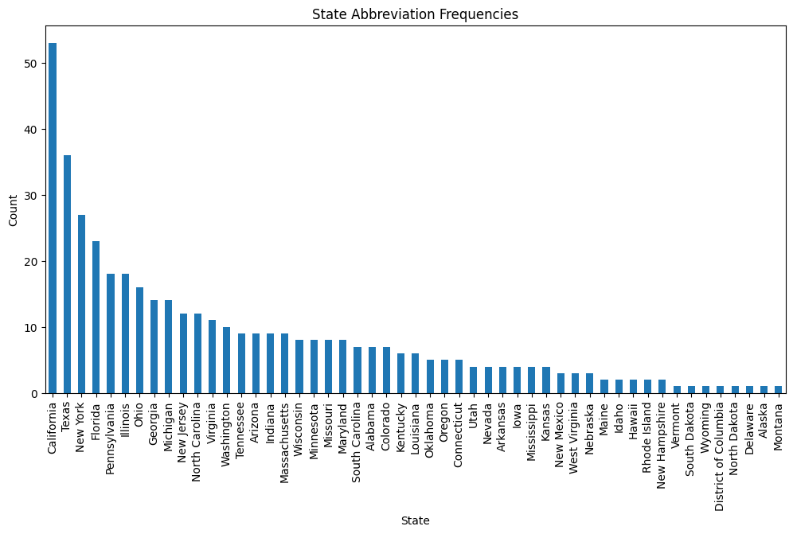
Univariate Distribution
I then plotted the univariate variables:
- median_household_income
- total_population
- voting_rate_estimate
to better understand the distribution of the data.
total_population and voting_rate_estimate displayed normal distributions.
The distribution of median_household_income was skewed to the right, with the majority of values falling below the mean.
Code
# Summary statistics for numerical variables# Histograms for selected columnsimport matplotlib.pyplot as pltimport seaborn as snsfor col in ['Median_Household_Income', 'Total_Population', 'voting_rate_estimate']: plt.figure(figsize=(8, 4)) sns.histplot(merged_df[col], kde=True, bins=30) plt.title(f"Distribution of {col}") plt.xlabel(col) plt.ylabel("Frequency") plt.show()
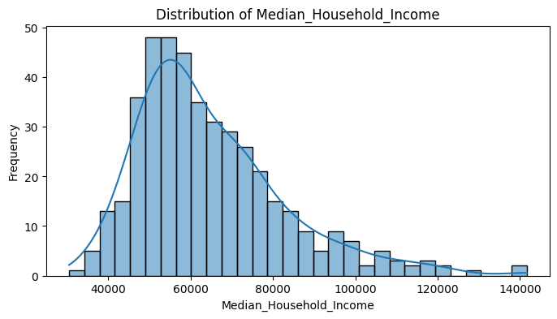
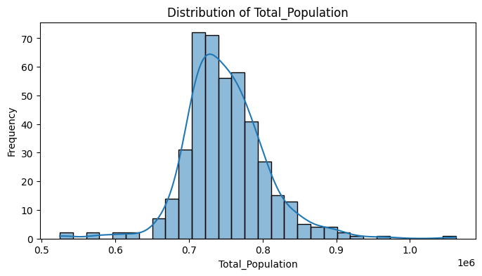
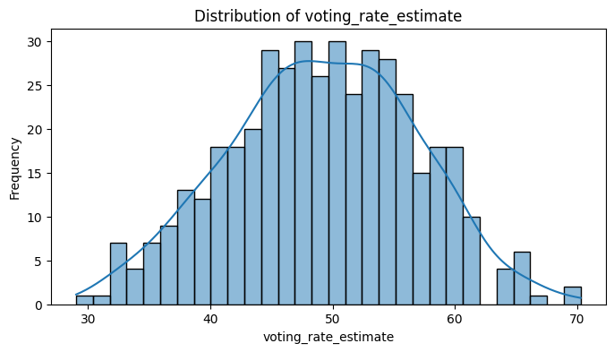
Outlier Removal To address outliers that may affect the mean and skewness of the data, I evaluated the skewness of every variable, those with over 1 were considered skewed and needed to be Log Normalized.
This showed that the variables “African_American”, “Asian”, “American_Indian_and_Alaskan_Native”, “Native_Hawaiin_and_Pacific_Islander” and “Median_househould_income” had skew values greater than the absolute value of 1, indicating a highly asymmetric and imbalanced distribution of data. ## Skewness Measurement Before Log
Code
import matplotlib.pyplot as plt# Calculate skewness for all numerical columnsfrom scipy.stats import skew# Ensure 'Congressional_District' is treated as a stringmerged_df['Congressional_District'] = merged_df['Congressional_District'].astype(str)# Calculate skewness for all numerical columns and filter values greater than 1skew_values = {}for col in merged_df.select_dtypes(include=['float64', 'int64']).columns: skew_value = skew(merged_df[col], nan_policy='omit') # Handle NaN values gracefullyifabs(skew_value) >1: # Filter for skewness greater than 1 in magnitude skew_values[col] = skew_value# Display columns with skewness > 1print("Columns with skewness > 1:")for col, skew_value in skew_values.items():print(f"{col}: {skew_value}")
This analysis showed that the variables African_American, Asian, American_Indian_and_Alaskan_Native, Native_Hawaiian_and_Pacific_Islander, and Median_household_income had skew values greater than the absolute value of 1, indicating a highly asymmetric and imbalanced distribution of data.
Skewness Measurement After Log
Code
from scipy.stats import skewimport numpy as np# Make a copy of the dataframe for log transformationmerged_log_df = merged_df.copy()# Identify highly skewed columnshighly_skewed_cols = [col for col, skewness in skew_values.items() ifabs(skewness) >1]# Apply log1p transformation to highly skewed columnsfor col in highly_skewed_cols:if col in merged_log_df.columns: # Check if the column exists merged_log_df[f'Log_{col}'] = np.log1p(merged_log_df[col]) # log1p handles zeros# Verify skewness after log transformationprint("\nSkewness after log transformation:")for col in highly_skewed_cols: log_col =f'Log_{col}'# Construct the name of the log-transformed columnif log_col in merged_log_df.columns: # Ensure the column exists transformed_skew = skew(merged_log_df[log_col])print(f"{log_col} skewness: {transformed_skew}")else:print(f"{log_col} does not exist in the dataframe.")# List of original columns to droporiginal_cols_to_drop = ['African_American', 'Asian', 'Median_Household_Income', 'American_Indian_and_Alaska_Native', 'Native_Hawaiian_and_Pacific_Islander']# Drop the original columnsmerged_log_df = merged_log_df.drop(columns=original_cols_to_drop)
I applied log-normalization to these columns on a copy of the original merged_df. After checking the skewness again:
- All values had an absolute value < 1, except for Native_Hawaiian_and_Pacific_Islander, which remained slightly over 1.
I chose not to reapply log-normalization to this variable, as the skew was only slightly above 1 and further transformations could compromise data integrity.
The results were stored in a new temporary DataFrame called merged_log_df, with the original skewed columns removed.
Standardizing Log Transformed Data
I then decided to standardize the columns once again, as the new merged_log_df has only been log normalized so far, producing a new data set merged_log_standard_df. This data frame will include columns that were logged and standardized. Merged_df, containing the raw data, and merged_standard_df, containing standardized data are kept for comparison.
The below plot shows the difference in distribution of the logged variables. It is very prominent that the logged values are much more normally distributed than the skewed data.
Distribution of Log Transformed Data
Code
import matplotlib.pyplot as pltimport seaborn as sns# Select log-transformed columnslog_columns = [col for col in merged_standard_log_df.columns if"Log_"in col]# Plot distributionsplt.figure(figsize=(15, 10))for i, col inenumerate(log_columns, 1): plt.subplot(3, 3, i) sns.histplot(merged_standard_log_df[col], kde=True, bins=30) plt.title(f"Distribution of {col}") plt.xlabel(col) plt.ylabel("Frequency")plt.tight_layout()plt.show()
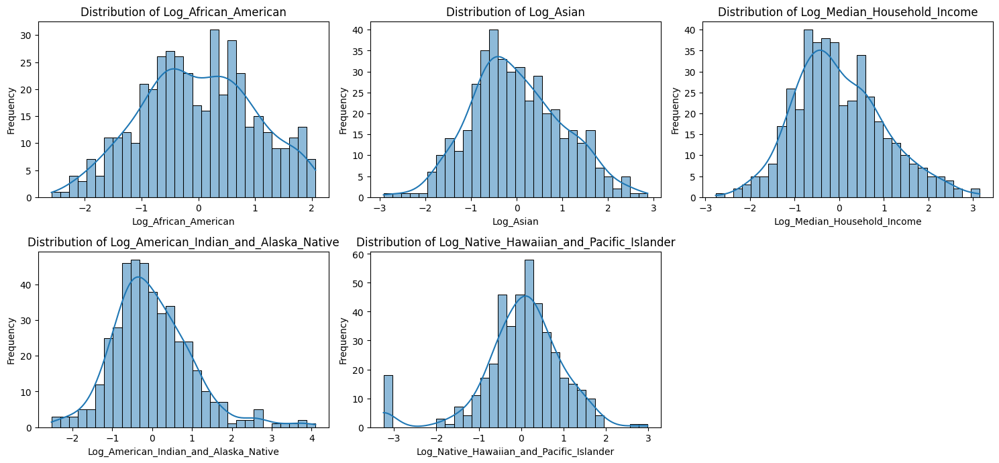
Distribution of Non-Log Transformed Data
Code
import matplotlib.pyplot as pltimport seaborn as sns# Specify the columns to plotcolumns_to_plot = ["Asian", "African_American", "Native_Hawaiian_and_Pacific_Islander", "Median_Household_Income", "American_Indian_and_Alaska_Native"]# Plot distributionsplt.figure(figsize=(15, 10))for i, col inenumerate(columns_to_plot, 1): plt.subplot(3, 2, i) # Adjust the grid for the number of plots sns.histplot(merged_standard_df[col], kde=True, bins=30) plt.title(f"Distribution of {col}") plt.xlabel(col) plt.ylabel("Frequency")plt.tight_layout()plt.show()
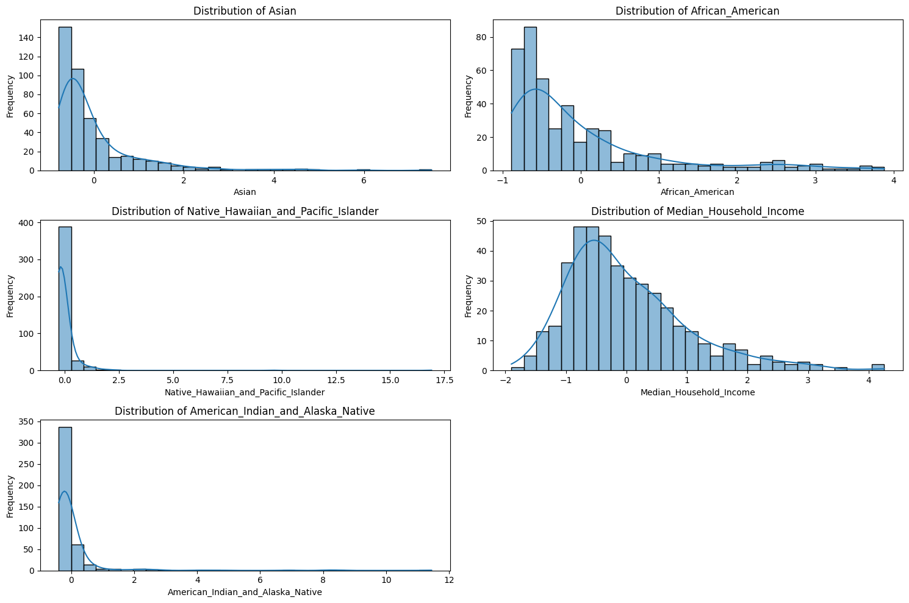
Correlation
To evaluate if utilizing the log transformed and standardized data set produced any difference, a correlation heat map was created.
Correlation Heatmap of Log-Transformed Data
Code
# Create a mapping of original to log-transformed column namesoriginal_columns = merged_standard_df.columnslog_columns = ["Log_"+ col if"Log_"+ col in merged_standard_log_df.columns else col for col in original_columns]# Reorder the log-transformed dataframe to match the order of original dataframemerged_standard_log_df = merged_standard_log_df[log_columns]import numpy as npimport matplotlib.pyplot as pltimport seaborn as sns# Compute the correlation matrixnumeric_cols = merged_standard_log_df.select_dtypes(include=['float64', 'int64'])corr = numeric_cols.corr()# Create a mask for the upper trianglemask = np.triu(np.ones_like(corr, dtype=bool))# Heatmap visualizationplt.figure(figsize=(10, 10))sns.heatmap(corr, mask=mask, annot=True, fmt='.2f', cmap='coolwarm', square=True, cbar_kws={"shrink": .8})plt.title("Correlation Matrix of Standard Log Data")plt.show()
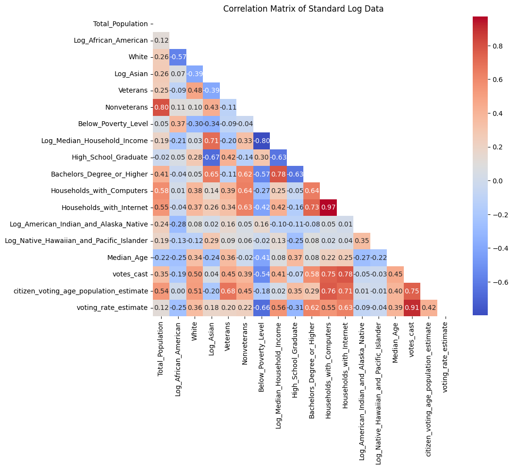
Correlation Heatmap off Non Log-Transformed Data
Code
import numpy as npimport matplotlib.pyplot as pltimport seaborn as sns# Compute the correlation matrixnumeric_cols = merged_standard_df.select_dtypes(include=['float64', 'int64'])corr = numeric_cols.corr()# Create a mask for the upper trianglemask = np.triu(np.ones_like(corr, dtype=bool))# Heatmap visualizationplt.figure(figsize=(10, 10))sns.heatmap(corr, mask=mask, annot=True, fmt='.2f', cmap='coolwarm', square=True, cbar_kws={"shrink": .8})plt.title("Correlation Matrix Standard Only ")plt.show()
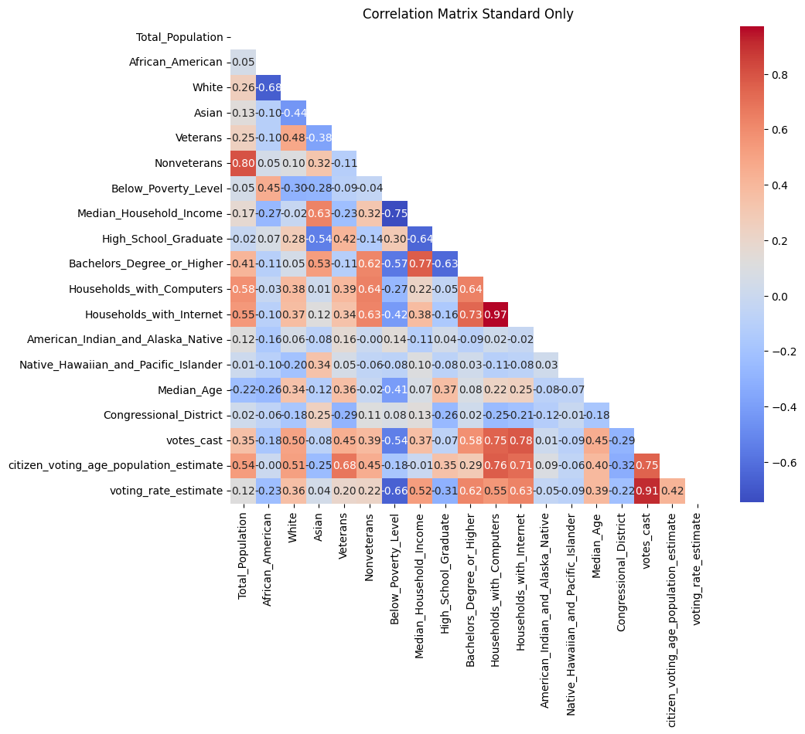
Log Transformed Effect Analysis
Code
import pandas as pd# Data for the tabledata = {"Variable": ["African American","Asian","Median Income","American Indian and Alaska Native","Native Hawaiian and Pacific Islander" ],"Standard Correlation": [-0.22, 0.05, 0.53, -0.09, 0.09 ],"Log Correlation": [-0.24, 0.19, 0.56, -0.12, -0.04 ]}# Create the DataFramecomparison_df = pd.DataFrame(data)print(comparison_df)
Variable Standard Correlation Log Correlation
0 African American -0.22 -0.24
1 Asian 0.05 0.19
2 Median Income 0.53 0.56
3 American Indian and Alaska Native -0.09 -0.12
4 Native Hawaiian and Pacific Islander 0.09 -0.04
The results showed that the variables that were logged experienced a change in correlation with voting_rate_estimate after the transformation:
African American:
Standard: -0.22 → Log-transformed: -0.24
Asian:
Standard: 0.05 → Log-transformed: 0.19
Median Income:
Standard: 0.53 → Log-transformed: 0.56
American Indian and Alaska Native:
Standard: -0.05 → Log-transformed: -0.09
Native Hawaiian and Pacific Islander:
Standard: 0.09 → Log-transformed: -0.04
Other variables not affected by the log transformation retained the same correlation scores.
The biggest difference and surprise was for Asian, where the correlation increased by 0.14. This shift could uncover new insights previously unseen and highlights the importance of applying log transformation to the dataset.
Voting Rate Estimates Correlation
Code
voting_corr = corr['voting_rate_estimate']# Convert to DataFrame for better readabilityvoting_corr_df = voting_corr.reset_index()voting_corr_df.columns = ['Feature', 'Correlation with Voting Rate']# Sort by correlation valuesvoting_corr_df = voting_corr_df.sort_values(by='Correlation with Voting Rate', ascending=False)# Print the DataFrameprint(voting_corr_df)
In analyzing the Log Transformed heatmap, we found that Voting Rate had the highest correlation with Households_with_internet with 0.63 Bachelors_Degree_or Higher, with 0.62. Following, was Log Median Household Income with 0.56, and Households_with_Computers with 0.55.
Below Poverty Level had the most negative correlation with -0.66, followed by High_school Graduate with -0.31 and Log_African_American, with -0.25.
Some other interesting metrics were white with 0.26 and Nonveterans having a higher correlation (0.22) than Veterans (0.2).
Bi-Variate Distribution
Further visualizations revealed patterns of correlation between features I deemed important, including:
- Median_Household_Income
- African_American
- Asian
- Poverty_Rate
- White
- Veterans
- High_School_Graduate
- Bachelors_Degree_or_Higher
- Median_Age
Plotting Log-Transformed Values
Code
# Scatterplot of voting_rate_estimate against key featuresimportant_features = ['Log_Median_Household_Income', 'Log_African_American', 'Log_Asian', 'Below_Poverty_Level', 'White', 'Veterans', 'High_School_Graduate', 'Bachelors_Degree_or_Higher', 'Median_Age']plt.figure(figsize=(15, 10))for i, feature inenumerate(important_features, 1): plt.subplot(3, 3, i) sns.scatterplot(data=merged_standard_log_df, x=feature, y='voting_rate_estimate') plt.title(f"Voting Rate vs {feature}") plt.xlabel(feature) plt.ylabel("Voting Rate Estimate")plt.tight_layout()plt.show()
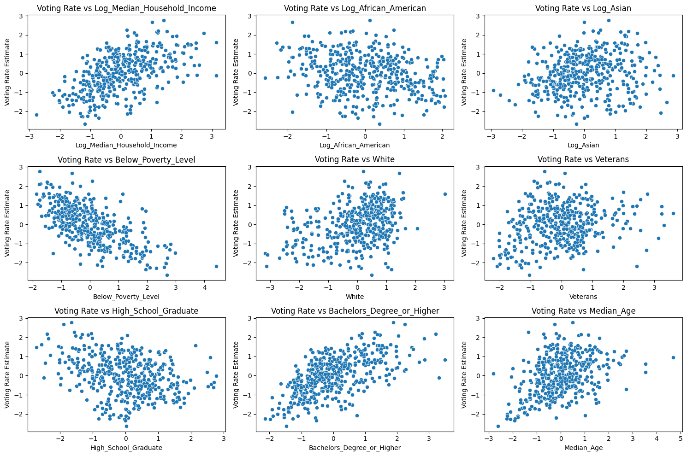
This showcased very interesting outcomes:
- Positive correlations between voting rates and:
- Median Household Income
- White
- Asian
- Bachelors Degree or Higher
- Median Age
Negative correlations between voting rates and:
Poverty Rate
High School Graduate
A slightly negative correlation was observed between voting rates and African American.
Plotting Raw Values
Code
# Scatterplot of voting_rate_estimate against key featuresfeatures = ['Median_Household_Income', 'African_American', 'Asian', 'Below_Poverty_Level', 'White', 'Veterans', 'High_School_Graduate', 'Bachelors_Degree_or_Higher', 'Median_Age']plt.figure(figsize=(15, 10))for i, feature inenumerate(features, 1): plt.subplot(3, 3, i) sns.scatterplot(data=merged_df, x=feature, y='voting_rate_estimate') plt.title(f"Voting Rate vs {feature}") plt.xlabel(feature) plt.ylabel("Voting Rate Estimate")plt.tight_layout()plt.show()
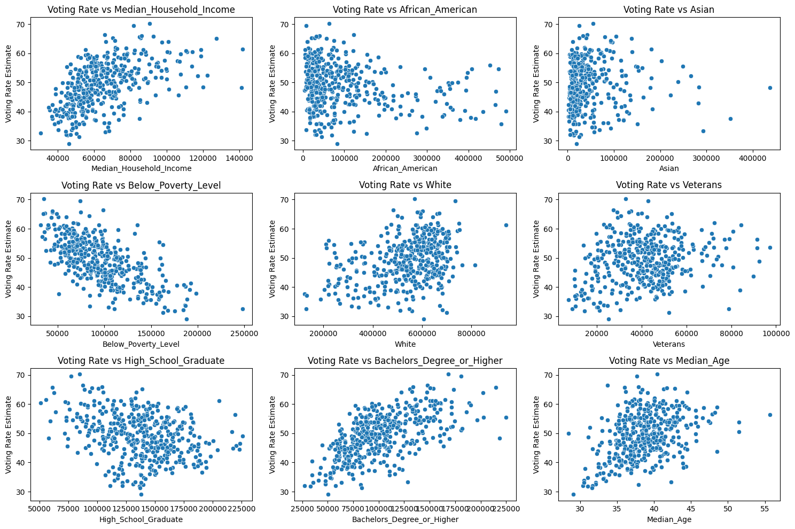
When comparing the log-transformed data to the raw data, the both showed patterns where:
- Median Age, Bachelors Degree, Median Household Income, and White showed positive correlations.
- Poverty Rate maintained a negative correlation.
Due to the skewed data in the Raw Data however, analyzing patterns for Asian and African American becomes very difficult. This highlights the importance of log transformation, as it adjusts the data into a more understandable and explainable form.
Comparison of Raw vs Log-Transformed Data Statistics
Raw Data Statistics:
mean std skew \
African_American 94183.689095 102405.485798 1.886305
Asian 42399.661253 52777.917382 3.181222
Median_Household_Income 64795.770302 18072.616613 1.207706
American_Indian_and_Alaska_Native 6338.090487 15279.267538 7.524386
Native_Hawaiian_and_Pacific_Islander 1448.104408 5381.575914 13.387485
kurtosis min max
African_American 3.165012 3667 491080
Asian 13.842183 1403 437632
Median_Household_Income 1.817438 30483 141661
American_Indian_and_Alaska_Native 66.960823 265 180970
Native_Hawaiian_and_Pacific_Islander 208.339729 0 92334
Log-Transformed Data Statistics:
mean std skew \
Log_African_American 4.142085e-16 1.001162 -0.003785
Log_Asian -1.714535e-15 1.001162 0.231266
Log_Median_Household_Income 3.977226e-15 1.001162 0.433710
Log_American_Indian_and_Alaska_Native 8.902392e-16 1.001162 0.809490
Log_Native_Hawaiian_and_Pacific_Islander -4.121478e-17 1.001162 -1.125207
kurtosis min max
Log_African_American -0.608039 -2.589643 2.066910
Log_Asian -0.191973 -2.916233 2.869244
Log_Median_Household_Income 0.093355 -2.770396 3.148080
Log_American_Indian_and_Alaska_Native 1.778489 -2.528258 4.100022
Log_Native_Hawaiian_and_Pacific_Islander 2.829978 -3.245660 2.983121
Voting Rate by State
A box and whisker plot is shown to showcase the differences in voting rates between states. This shows how voting rates differ between states, with Minnesota having the highest with 62.7% and Hawaii with the lowest at 39.22%.
Code
# Boxplot of voting rate by stateplt.figure(figsize=(15, 6))sns.boxplot(data=merged_standard_log_df, x='state', y='voting_rate_estimate')plt.xticks(rotation=90)plt.title("Voting Rate Estimate by State")plt.xlabel("State")plt.ylabel("Voting Rate Estimate")plt.show()
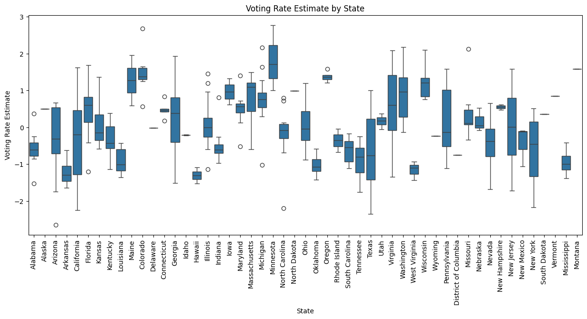
Distribution of Voting Rate Pairplot
A pairwise plot showcasing scatterplots between the important features is shown, with the ability to not only check correlation between features and voting rate, but all features amongst each other. - For example, poverty rate and bachelors degree or higher have a negative correlation, while bachelors degree of higher and median income have a positive correlation.
Code
# Distribution of voting_rate_estimatesns.histplot(merged_standard_log_df['voting_rate_estimate'], kde=True, bins=30)plt.title("Distribution of Voting Rate Estimate")plt.xlabel("Voting Rate Estimate")plt.ylabel("Frequency")plt.show()# Relationship with featuressns.pairplot(data=merged_standard_log_df, vars=important_features + ['voting_rate_estimate'])plt.show()
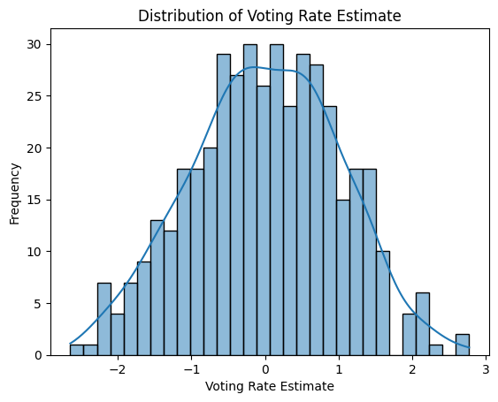
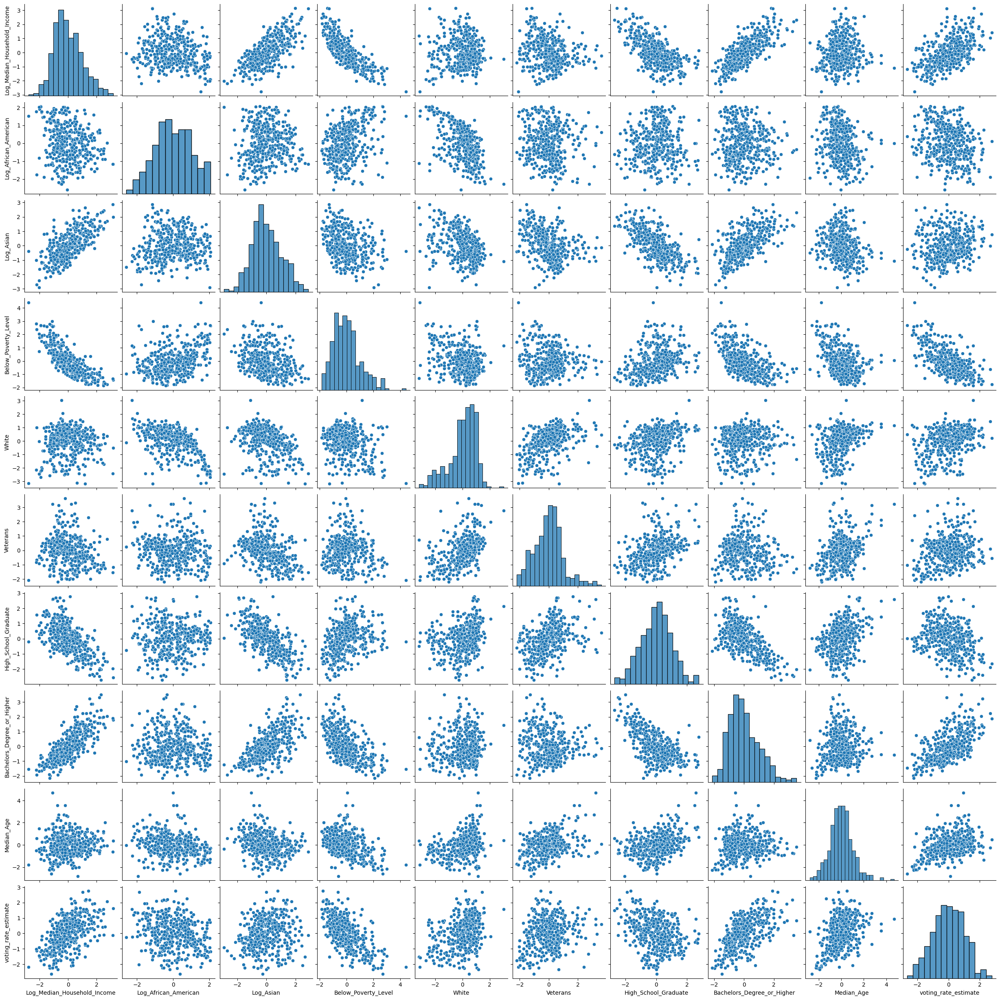
Statistical Testing
Statistical testing was utilized to answer questions regarding the data and relationships between variables. We utilize an ANOVA test and T Test to compare and quantify differences between voting rate and states
Null Hypothesis: There are no significant statistical differences between states. Alternative Hypothesis: There is a significant statistical difference between states. An Anova test is done to evaluate if there is any differences in voting rate between states.
Anova Test
Code
# do voting rates differ for states from scipy.stats import f_onewaygroups = [merged_standard_log_df[merged_standard_log_df['state_abbreviation'] == state]['voting_rate_estimate'] for state in merged_standard_log_df['state_abbreviation'].unique()]f_stat, p_value = f_oneway(*groups)print(f"F-Statistic: {f_stat}, P-Value: {p_value}")
The p-value is greater than 0.05, so we fail to reject the null hypothesis. This indicates the difference in voting rates between California and Texas is not statistically significant at the 95% confidence level.
T-Test: Massachusetts vs Rhode Island
Two states, Massachussets and Rhode Island are compared. Both states are similar in size and in the North East
The p-value is greater than 0.05, so we fail to reject the null hypothesis. This indicates the difference in voting rates between Massachussets and Rhode Island is not statistically significant at the 95% confidence level.
T-Test: Florida vs Oregon
Florida and Oregon are compared. These states have drastically different population sizes, geography, and voting culture.